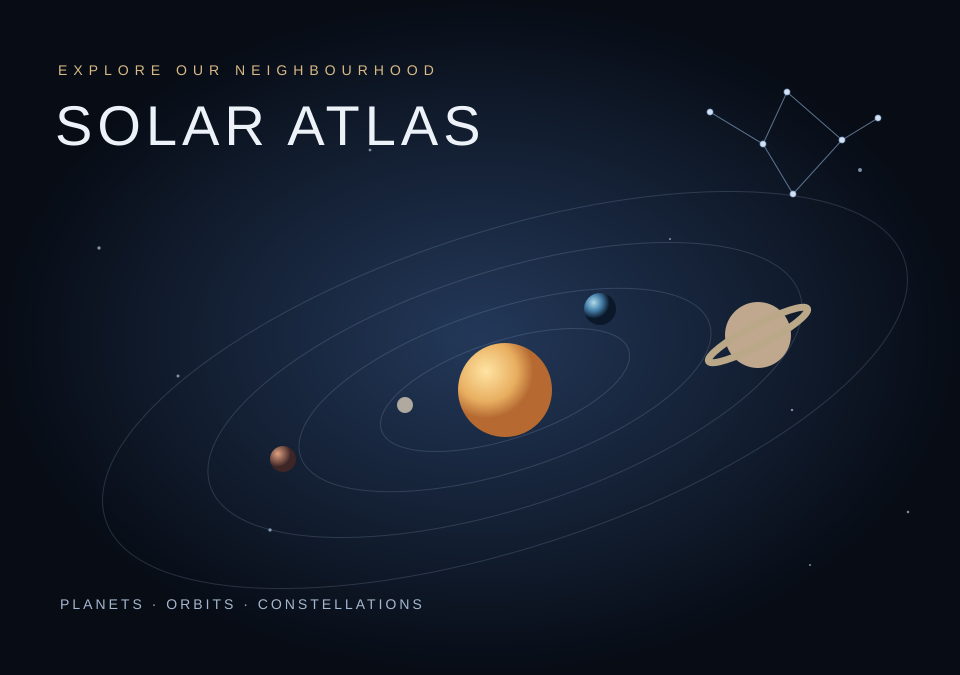
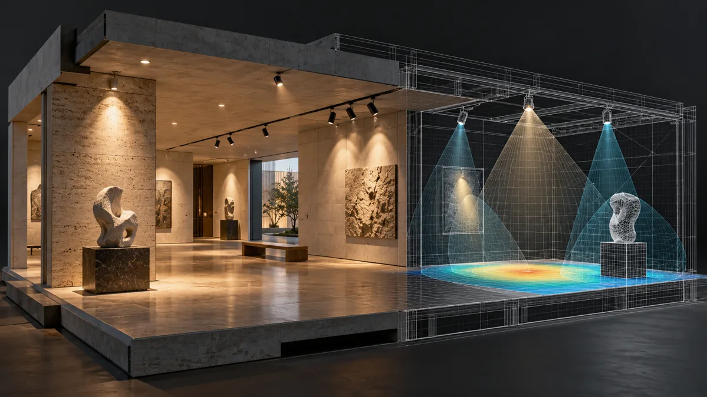
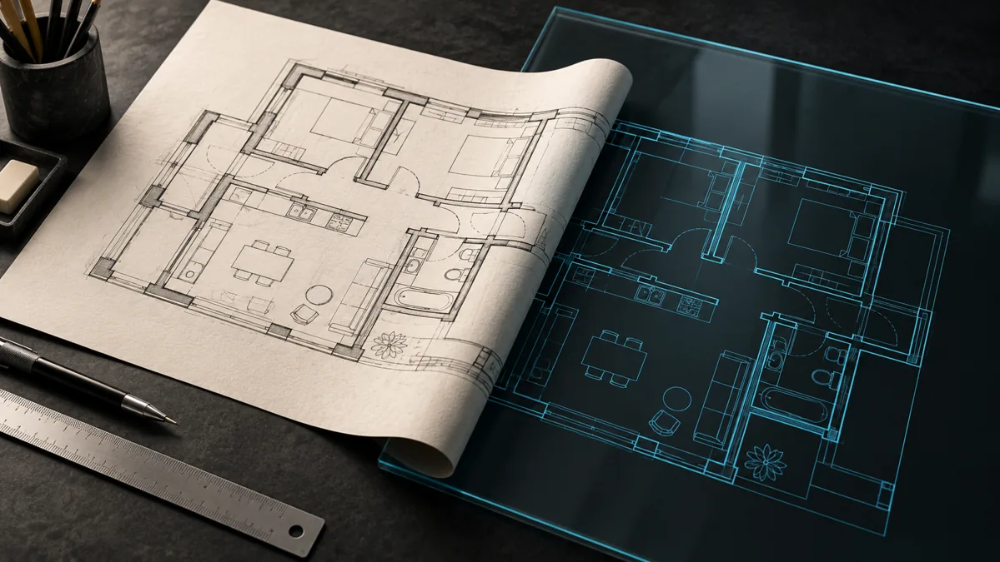
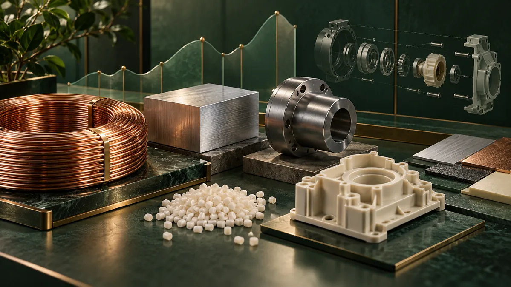

滚动 / 双指缩放 · 拖动旋转
3D 场景暂不可用，仍可浏览下方作品。
项目作品
10个项目



没有找到匹配的项目
试试其他关键词，或查看全部项目。
使用指南 项目访问与数据说明
开始浏览
- 按分类筛选或搜索项目，点击入口即可体验。
- 展开「详情」查看访问条件与功能范围。
- 右上角切换语言与主题；太阳系可随时退出并返回作品。
各项目怎样使用
Solar Atlas
探索太阳与八大行星的档案和演变历史，点选地球七大洲，查看主要卫星与五颗彗星轨道；支持双星对比及 88 星座星图。
进入独立项目DC World
按游戏引导配置自己的 DeepSeek，查看居民、城市议事与建设进度。每个浏览器独立城市；自动议事需保持页面打开。
进入 DC World ↗LumiPilot
在情报操作台浏览人物、产品与照明方案。公开界面保留已发布资料，实时采集、编辑和模型分析需完整后台。
查看情报操作台与说明 ↗Web Showing
从入口登录，浏览户外灯具与工程案例；登录页在新标签页打开。
前往账号登录入口 ↗LUMINA
选择案例、调整灯具与灯光，再查看照度分析或导出方案。AI 功能需连接自己的 DeepSeek；工程结果需复核。
进入在线演示 ↗越语冒险
按课程听音、选词与排序闯关，用错题复习巩固。进度保存在当前浏览器。
进入学习首页 ↗万朝逐鹿
选择朝代进入单人练兵，学习建设、征兵与攻城。联机需要另行配置服务器。
进入游戏与玩法指南 ↗PDF 转 CAD
导入 PDF 或压缩包，选择转换模式、校准尺寸，再下载 DWG / DXF。图纸本地处理；刷新前请保存结果，扫描件需人工复核。
进入图纸工坊 ↗采衡
在「成本模型」中导入资料、选择费率并核价；在「材料行情监控」中查看走势与研报。AI 分析需自己的 DeepSeek，报价和估算需核对后使用。
打开采购工作台 ↗访问与数据说明
浏览器内保存的方案、学习进度和私人资料，换设备或清除数据前请先导出备份。PDF 转 CAD 的任务在刷新后清空。
项目内查看来源、日期与适用范围；演示、AI 建议及工程估算不等于实际验证结果。